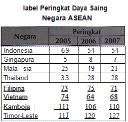

Teks berikut digunakan untuk menjawab soal nomor 25-30. (1) Berbagai indikator dan hasil survei menunjukkan perbaikan kondisi ekonomi Indonesia ini masih lambat. (2) Dalam publikasi Global Competitiveness Report 2007 -2008, disebutkan bahwa daya saing ekonomi Indonesia 2007 tetap beradapada posisi 54 dari 131 negara setelah pada 2006 sempat mengalami perbaikan yang cukup signifikan dibandingkan 2005. (3) U_ntuk lebih jelasnya dapat memerhatikan tabel di bawah, yang menunjukkan posisi Indonesia dibandingkan dengan negara-negara ASEAN lainnya.  (4) Situasi yang sama juga_terungkap'dari . hasil survei International Institute for Management Development (IIMD), dalam . publikasinya · World Competitiveness Yearbook tahun 2007, yang menunjukkan · daya saing ekonomi Indonesia tidak mengalami perbaikan.· (5) Indonesia mengalami penurunan peringkatdayasa_ing dari peringkat 52 pada tahun 2006 menjadi peringkat 54 dari 55 negara pada 2007. (6) Posisi Indonesia hanya unggul satu tingkat di atas Venezuela serta berada tepat di bawah Argentina, Polandia, dan Kroasia. (7) Terlebih lagi apabila dibandingkan dengan negara-negara ASEAN lainnya seperti Singapura, Malaysia, Thailand, dan Filipina posisi Indonesia masih jauh tertinggal di bawahnya. (8) Kondisi infrastruktur, institusi, dan pendidikan dasaryang buruk berkontribusi pada tidak membaiknya daya saing ekonomi Indonesia (9) Dalam survei WEF (World Economic Forum) 2007 juga menyebutkan bahwa faktor utama yang menghambat bisnis di Indonesia di Indonesia adalah infrastruktur yang buruk dan diikuti dengan birokrasi pemerintah yang dinilai belum efisien. (10) Kua I itas institusi di Indonesia juga dinilai rendah berdasarkan hasil survei Transparency International mengenai persepsi korupsi yang menempatkan Indonesia berada pada peringkat 134 terkorup di dunia (dari 163 negara) (Disadur dari Outlook Ekonomi Indonesia 2008-207 2)